여기까지 완료되면 대본에 대한 영상 제작은 모두 완료되었습니다. 이제는 인트로 후킹 이미지를 동영상으로 변환하는 방법에 대해 배워보겠습니다.
방법 1. Google Flow에서 이미지 → 동영상 변환
Google Flow 바로가기 →Flow에서는 처음 가입 시 100크레딧을 드리고, 이후 하루 50크레딧씩 새로 제공됩니다. 동영상 1개 생성에 20크레딧이 소모되므로 하루에 약 2개의 동영상을 무료로 만들 수 있습니다. 또한 이미지 1개를 8초짜리 동영상으로 변환해줍니다.
Flow에서 이미지 만드는 방법 기억나시나요? 혹시 기억이 나지 않으신다면 아래 버튼을 눌러 다시 확인해보세요.
후킹 이미지 만들기로 바로가기 →앞에서 "응급실에 실려가는 70대 할아버지"라는 프롬프트로 만들었던 이미지를 동영상으로 변환해보겠습니다.
이미지에 마우스를 올려서 점 3개 클릭 → 애니메이션 적용을 클릭합니다.
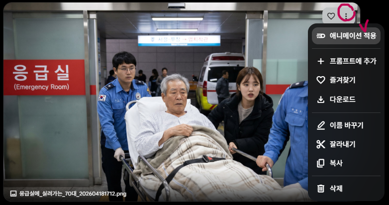
그러면 프롬프트를 입력할 수 있는 창이 뜹니다. 아래와 같이 프롬프트를 입력하고 동영상을 만들어보겠습니다.
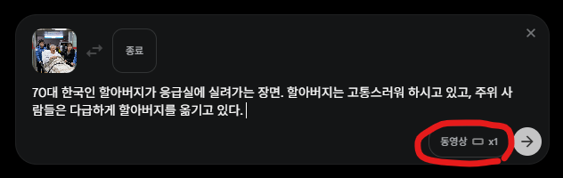
동영상이 x4로 되어있다면 x1로 변경 후 생성해주세요.
사람이 이야기하는 더빙 영상을 만들고 싶다면 아래 형식으로 작성해주세요.
"(사람)가 한국어로 "(대사)"라고 이야기하며 (상황)"
예시) 할아버지가 한국어로 "아이고 나 죽네"라고 이야기하며 응급실에 실려가는 장면.
조금 기다리면 이미지 옆에 동영상이 생성된 것을 확인할 수 있습니다.
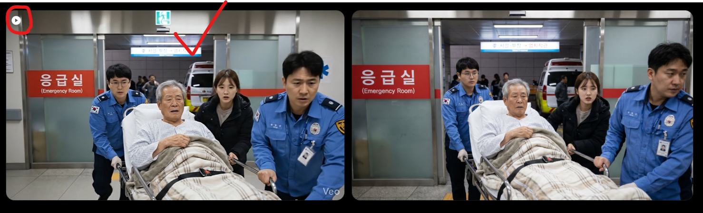
영상을 클릭해서 확인 후 마음에 든다면 오른쪽 상단의 다운로드 → 720p로 다운로드합니다.
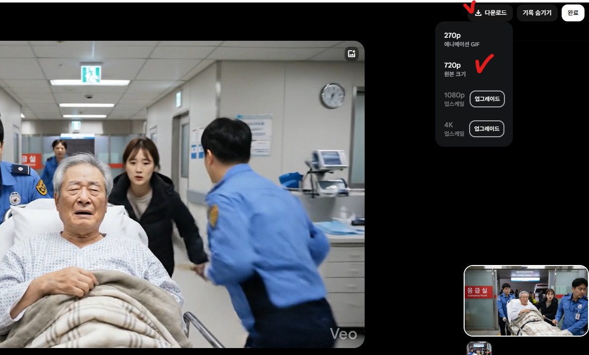
마음에 들지 않는다면 다른 프롬프트로 다시 만들어보세요.
방법 2. 구글 비즈에서 이미지 → 동영상 변환
Google Vids 바로가기 →구글 비즈는 이미지 → 동영상 변환을 월 10건까지 무료로 사용할 수 있습니다. 앞에서 소개한 Gemini(제미나이) 유료 버전(Google AI Pro)을 구독 중이신 분들은 더 많이 사용할 수 있습니다.
구글 비즈에 로그인합니다.
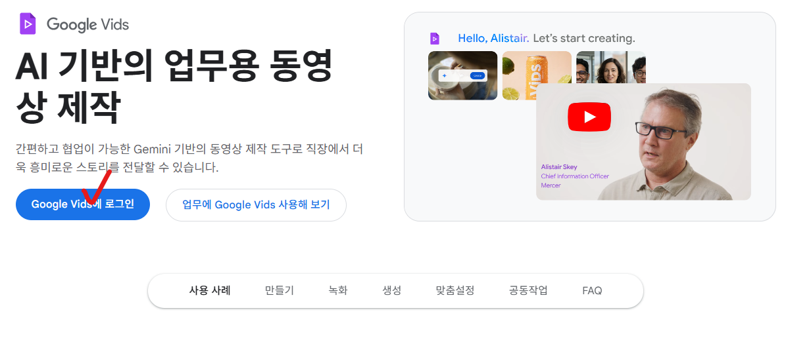
아래와 같은 화면이 뜨는데 Veo 3.1을 클릭합니다.
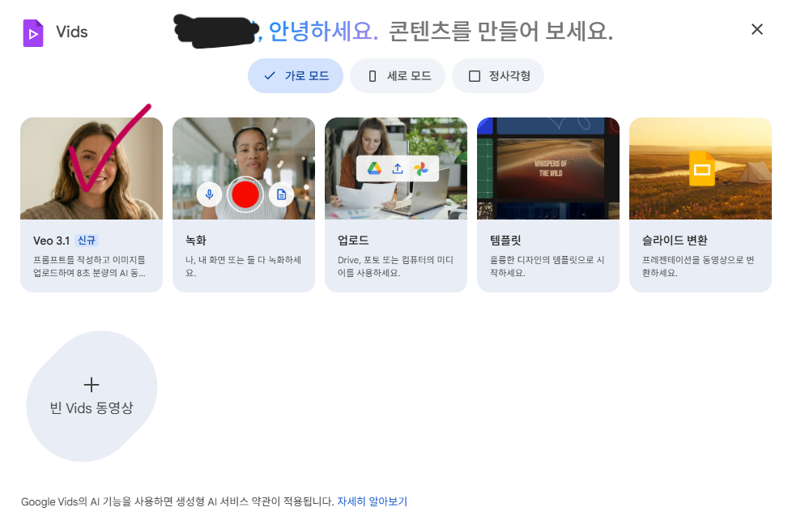
아래와 같은 창이 뜹니다.
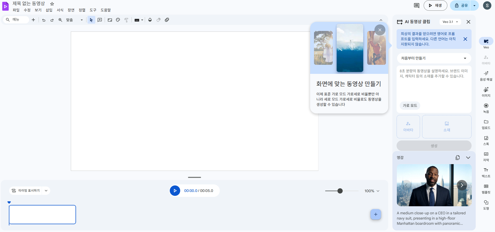
오른쪽의 처음부터 만들기를 이미지 애니메이션 효과 적용으로 변경합니다.
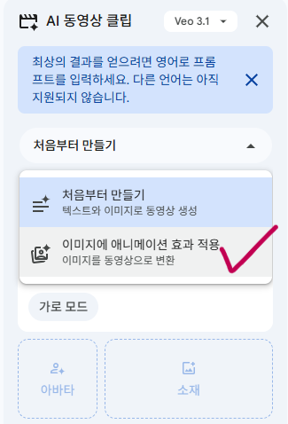
이미지 추가로 변경된 것을 확인할 수 있습니다. 동영상으로 변환하고 싶은 이미지를 드래그해서 넣거나, 이미지 추가를 클릭해서 저장된 이미지를 추가합니다.
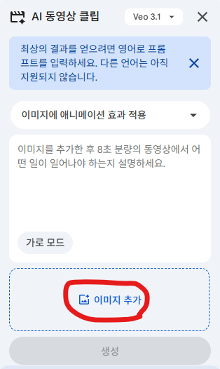
이미지가 추가되었으면 원하는 동영상 프롬프트를 입력합니다. Flow에서 사용했던 프롬프트를 그대로 입력해보겠습니다. 프롬프트 입력 후 생성 버튼을 클릭합니다.
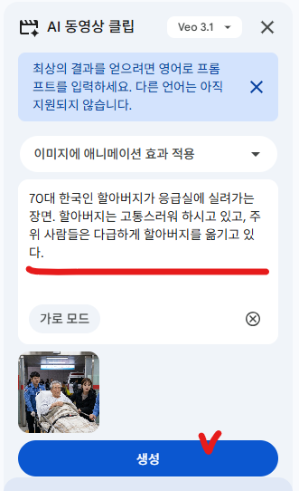
기다리면 생성 버튼 아래에 8초짜리 동영상이 만들어진 것을 확인할 수 있습니다. 클릭해서 확인합니다.
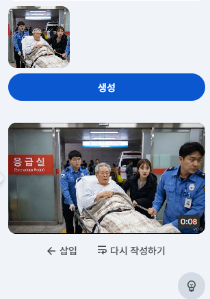
8초짜리 동영상 생성 완료">큰 화면으로 영상이 나옵니다. 삽입을 클릭해줍니다. 마음에 들지 않는다면 오른쪽에서 프롬프트를 변경해서 다시 생성합니다.
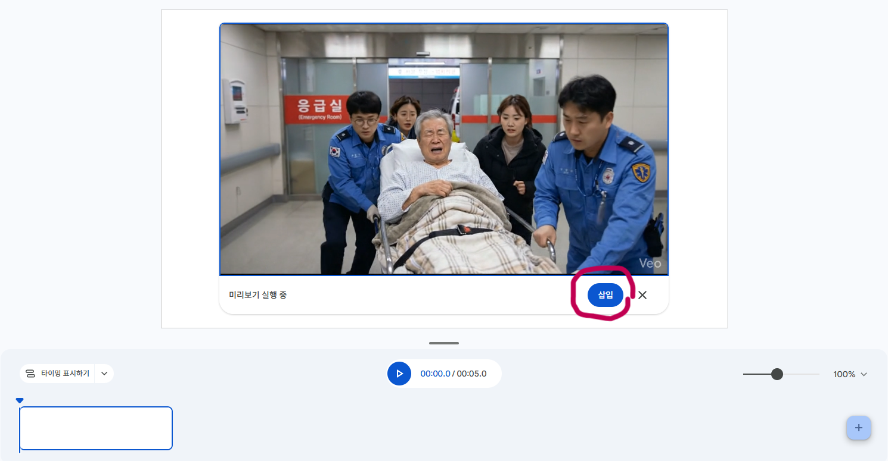
마음에 든다면 오른쪽 상단의 공유 옆 버튼을 눌러서 MP4로 다운로드를 클릭합니다.
마무리
이렇게 해서 영상 제작이 모두 끝났습니다.
2026년 초까지만 해도 무료 AI 툴들이 많았는데 점점 유료화되어가고 있고, 무료 횟수 제한도 많이 생기고 있습니다. 하지만 무료로도 충분히 시작할 수 있습니다. 무료로 써보고 퀄리티를 체크한 후, 나에게 맞는 툴을 충분히 고민하고 유료로 전환하는 것이 좋습니다.
모든 AI 툴은 처음부터 너무 비싼 요금제를 선택하지 말고 가장 저렴한 플랜으로 시작해서 퀄리티를 확인 후 사용하는 것을 권장합니다. 저도 그렇게 하지 않아서 많은 돈을 날렸기 때문에 여러분들은 그러지 않으시길 바랍니다.
유료 전환을 고민하고 계신다면 각 툴의 자세한 정보는 아래에서 확인하세요.
AI 툴 소개 바로가기 →각 툴의 가격 변동이나 새로운 무료 툴이 생기면 이 사이트를 통해 계속 업데이트해드리겠습니다.